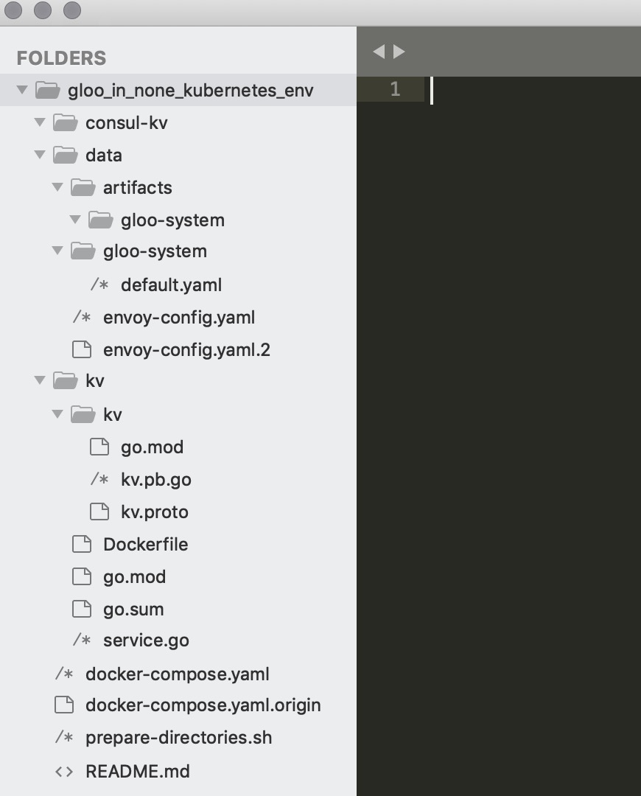
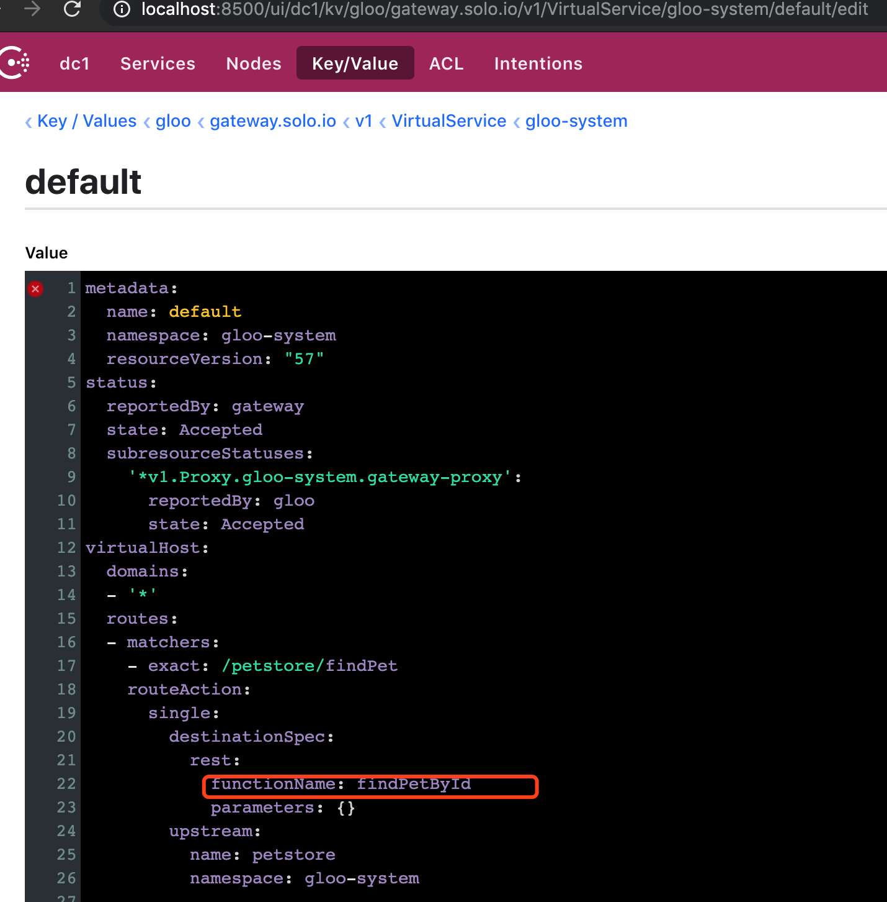
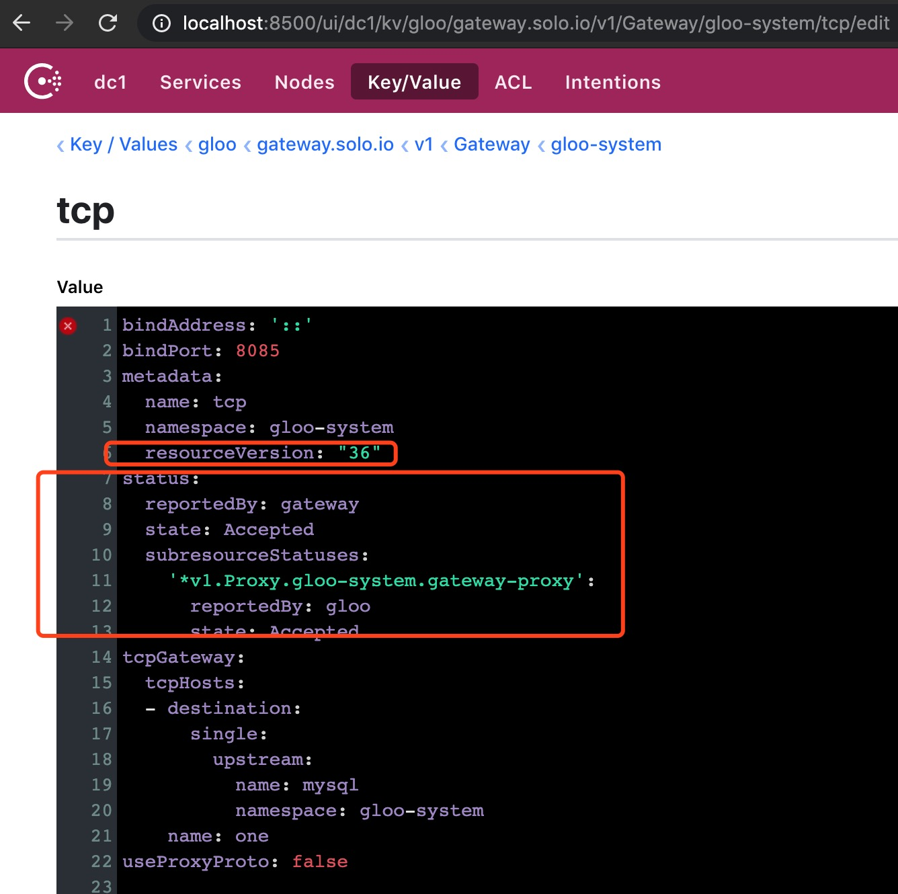

本系列文章主要介绍了在非 kubernetes 环境，使用 gloo 搭建服务网关的过程，以及 gloo 的简单的使用指南。
系列文章目录如下:
- 使用 gloo 在非 kubernetes 环境搭建服务网关指南 - 初识 gloo
- 使用 gloo 在非 kubernetes 环境搭建服务网关指南 - 路由能力: tcp / http
- [使用 gloo 在非 kubernetes 环境搭建服务网关指南 - 路由能力: grpc][3]
- [使用 gloo 在非 kubernetes 环境搭建服务网关指南 - envoy 高可用、错误注入、超时控制、熔断][4]
- [使用 gloo 在非 kubernetes 环境搭建服务网关指南 - 指标监控、报警][5]
- [使用 gloo 在非 kubernetes 环境搭建服务网关指南 - 链路跟踪][6]
- [使用 gloo 在非 kubernetes 环境搭建服务网关指南 - 权限、流控][7]
上篇文章主要简单介绍了 gloo 以及在非 k8s 环境下运行了简单的 gloo demo。 接下来两篇文章我会简单讲述一下 gloo 的路由能力。
接下来的内容的代码都在这个仓库里， 它是基于 gloo 源码下的 install/docker-compose-consul 例子建立的，其中增加了一些服务、 consul kv 内容等文章需要的资料。
首先我们来看一下增加的东西都有什么：

- consul-kv: 用来放每篇文章需要用到的 consul kv 的修改内容。正如上篇所说，我们在非 k8s 环境配置 gloo 是通过修改 consul kv 的方式来进行的，
所以每篇文章中对应功能的 kv 内容会整理到这个文件夹。如本篇用到的会放到
consul-kv/02 - data: 挂载进容器用来配置 gloo 和 envoy 的内容
- envoy-config.yaml.2: 在讲述 [envoy 高可用][4]部分内容时用到
- kv: kv 是 docker-compose 文件里面的 kv 服务器的源码，其中提供了一个内存实现的 kv grpc 服务，讲述[grpc 路由能力][3]时用到
docker-compose.yml: 经过增加的 docker-compose 文件，原版 docker-compose.yml 放在了 docker-compose.yml.origin 里，我们可以 diff 一下看看有什么区别
➜ gloo_in_none_kubernetes_env git:(master) diff docker-compose.yaml docker-compose.yaml.origin 87,97d86 < gateway-proxy-2: < image: ${GLOO_REPO:-quay.io/solo-io}/gloo-envoy-wrapper:${GLOO_VERSION:-1.2.4} < entrypoint: ["envoy"] < command: ["-c", "/config/envoy.yaml", "--disable-hot-restart"] < volumes: < - ./data/envoy-config.yaml.2:/config/envoy.yaml:ro < ports: < - "9080:8080" < - "9443:8443" < - "29000:19000" < restart: always 99,126d87 < kv: < image: docker.io/trainyao/gloo_in_none_kubernetes_env_kv:reflect < ports: < - "8081:8081" < restart: always < < kv2: < image: docker.io/trainyao/gloo_in_none_kubernetes_env_kv:reflect < ports: < - "8082:8081" < restart: always < < kv-no-reflect: < image: docker.io/trainyao/gloo_in_none_kubernetes_env_kv:latest < ports: < - "8083:8081" < restart: always < < mysql: < image: mysql:5.7 < ports: < - "3306:3306" < environment: < MYSQL_USER: root < MYSQL_PASSWORD: root < MYSQL_DATABASE: db < MYSQL_ROOT_PASSWORD: root < restart: always ➜ gloo_in_none_kubernetes_env git:(master)可以看到我增加多了几个服务：
- gateway-proxy-2: 另一个 envoy 实例，这个在讲述[envoy 高可用][4]部分内容会用到
- kv,kv2,kv-no-reflect: kv 服务，其中kv kv2 是 grpc 路由功能会用到的，kv-no-reflect 是 kv 的没有增加 grpc 反射功能的版本，用来对照实验
- mysql: 本篇用到，用来做 tcp 网关实验
介绍完毕，可以开始本篇的内容：gloo 的 tcp & http 路由能力
http 路由
gloo 的 http 路由能力其实通过上篇 petstore demo 也能看的出来了。这里不再赘述，更多的路由功能比如 path 重写、header 路由、提取参数等等， 各位也可以参考 gloo 文档进行参考和修改 consul kv。 这里想提到的是 gloo 所说的 function routing 的功能，也就是函数级路由。
gloo 在感知到 upstream 生成后，会检查 upstream 有没有提供 http://upstream.domain/swagger.json 这个 endpoint 提供， 如有，gloo 会分析该 swagger 文件并得到该 upstream 有什么函数可以提供服务，以及参数如何。
这个功能的开启需要配置 gloo 翻译组件的 fds 功能，官网文档的操作在这里，
这个是 k8s 环境下的操作，而 consul 环境下只需修改 data/gloo-system/default.yaml 文件的内容即可，diff 一下可以看出需要修改哪些内容：
➜ gloo_in_none_kubernetes_env git:(master) ✗ diff data/gloo-system/default.yaml path/to/gloo/source_code/install/docker-compose-consul/data/gloo-system/default.yaml
10,11d9
< discovery:
< fdsMode: BLACKLIST
➜ gloo_in_none_kubernetes_env git:(master) ✗
修改内容和官网文档是对应的。
开启后，我们正常将服务注册到 consul 再查看 upstream 信息就可以看到，gloo 已经感知到 petstore 内有什么函数了：
➜ gloo_in_none_kubernetes_env git:(master) ✗ docker-compose up &
➜ gloo_in_none_kubernetes_env git:(master) ✗ PETSTORE_IP=$(docker inspect -f '{{range .NetworkSettings.Networks}}{{.IPAddress}}{{end}}' gloo_in_none_kubernetes_env_petstore_1)
cat > petstore-service.json <<EOF
{
"ID": "petstore1",
"Name": "petstore",
"Address": "${PETSTORE_IP}",
"Port": 8080
}
EOF
➜ gloo_in_none_kubernetes_env git:(master) ✗
➜ gloo_in_none_kubernetes_env git:(master) ✗ curl -v \
-XPUT \
--data @petstore-service.json \
"http://127.0.0.1:8500/v1/agent/service/register"
* Trying 127.0.0.1...
* TCP_NODELAY set
* Connected to 127.0.0.1 (127.0.0.1) port 8500 (#0)
> PUT /v1/agent/service/register HTTP/1.1
> Host: 127.0.0.1:8500
> User-Agent: curl/7.54.0
> Accept: */*
> Content-Length: 83
> Content-Type: application/x-www-form-urlencoded
>
* upload completely sent off: 83 out of 83 bytes
< HTTP/1.1 200 OK
< Vary: Accept-Encoding
< Date: Sat, 01 Feb 2020 02:40:19 GMT
< Content-Length: 0
<
* Connection #0 to host 127.0.0.1 left intact
➜ gloo_in_none_kubernetes_env git:(master) ✗ glooctl g u --use-consul
+----------+--------+----------+--------------------+
| UPSTREAM | TYPE | STATUS | DETAILS |
+----------+--------+----------+--------------------+
| consul | Consul | Accepted | svc name: consul |
| | | | svc tags: [] |
| | | | |
| petstore | Consul | Accepted | svc name: petstore |
| | | | svc tags: [] |
| | | | REST service: |
| | | | functions: |
| | | | - addPet |
| | | | - deletePet |
| | | | - findPetById |
| | | | - findPets |
| | | | |
+----------+--------+----------+--------------------+
接下来，我们就可以按照官网的教程，配置函数级路由了。
glooctl add route \
--path-exact /petstore/findPet \
--dest-name default-petstore-8080 \
--rest-function-name findPetById --use-consul
{"level":"info","ts":"2020-02-01T10:53:40.903+0800","caller":"selectionutils/virtual_service.go:99","msg":"Created new default virtual service","virtualService":"virtual_host:<domains:\"*\" > status:<> metadata:<name:\"default\" namespace:\"gloo-system\" > "}
+-----------------+--------------+---------+------+---------+-----------------+--------------------------------+
| VIRTUAL SERVICE | DISPLAY NAME | DOMAINS | SSL | STATUS | LISTENERPLUGINS | ROUTES |
+-----------------+--------------+---------+------+---------+-----------------+--------------------------------+
| default | | * | none | Pending | | /petstore/findPet -> |
| | | | | | | gloo-system.petstore |
| | | | | | | (upstream) |
+-----------------+--------------+---------+------+---------+-----------------+--------------------------------+
可以看到，我们上述操作在 consul 里创建了一个 virtaul service 对象：

我们来验证一下效果：
➜ gloo_in_none_kubernetes_env git:(master) ✗ glooctl g vs --use-consul
+-----------------+--------------+---------+------+----------+-----------------+--------------------------------+
| VIRTUAL SERVICE | DISPLAY NAME | DOMAINS | SSL | STATUS | LISTENERPLUGINS | ROUTES |
+-----------------+--------------+---------+------+----------+-----------------+--------------------------------+
| default | | * | none | Accepted | | /petstore/findPet -> |
| | | | | | | gloo-system.petstore |
| | | | | | | (upstream) |
+-----------------+--------------+---------+------+----------+-----------------+--------------------------------+
➜ gloo_in_none_kubernetes_env git:(master) ✗
➜ gloo_in_none_kubernetes_env git:(master) ✗ curl localhost:8080/petstore/findPet
[{"id":1,"name":"Dog","status":"available"},{"id":2,"name":"Cat","status":"pending"}]
tcp 路由
tcp 路由能力比较简单，根据官网文档配置 gateway 对象就可以了。
首先将 mysql 服务注册到 consul
MYSQL_IP=$(docker inspect -f '{{range .NetworkSettings.Networks}}{{.IPAddress}}{{end}}' gloo_in_none_kubernetes_env_mysql_1)
cat > mysql.json <<EOF
{
"ID": "mysql1",
"Name": "mysql",
"Address": "${MYSQL_IP}",
"Port": 3306
}
EOF
➜ gloo_in_none_kubernetes_env git:(master) ✗
➜ gloo_in_none_kubernetes_env git:(master) ✗ curl -v \
-XPUT \
--data @mysql.json \
"http://127.0.0.1:8500/v1/agent/service/register"
* Trying 127.0.0.1...
* TCP_NODELAY set
* Connected to 127.0.0.1 (127.0.0.1) port 8500 (#0)
> PUT /v1/agent/service/register HTTP/1.1
> Host: 127.0.0.1:8500
> User-Agent: curl/7.54.0
> Accept: */*
> Content-Length: 78
> Content-Type: application/x-www-form-urlencoded
>
* upload completely sent off: 78 out of 78 bytes
< HTTP/1.1 200 OK
< Vary: Accept-Encoding
< Date: Sat, 01 Feb 2020 04:53:32 GMT
< Content-Length: 0
<
* Connection #0 to host 127.0.0.1 left intact
➜ gloo_in_none_kubernetes_env git:(master) ✗
➜ gloo_in_none_kubernetes_env git:(master) ✗ glooctl g u --use-consul
+----------+--------+----------+------------------+
| UPSTREAM | TYPE | STATUS | DETAILS |
+----------+--------+----------+------------------+
| consul | Consul | Accepted | svc name: consul |
| | | | svc tags: [] |
| | | | |
| mysql | Consul | Accepted | svc name: mysql |
| | | | svc tags: [] |
| | | | |
+----------+--------+----------+------------------+
将 consul-kv/01/gateway-tcp 下的内容配置到 gloo/gateway.solo.io/v1/Gateway/gloo-system/tcp 路径下，其中，
8085 端口是我们在 docker-compose.yml 里为 envoy 容器开启的，用来路由本次实验的 tcp 流量。

会发现 gateway 组件会增加 accepted 状态。这时，envoy 已经可以路由 tcp 流量了
➜ gloo_in_none_kubernetes_env git:(master) ✗ telnet localhost 8085
Trying ::1...
Connected to localhost.
Escape character is '^]'.
J
5.7.266S>h')o
>,#VmVmysql_native_password
用 mysql 工具也可以通过 8085 端口连接到 mysql 容器了
总结
本文简单介绍了 gloo 的 tcp 和 http 路由能力，以及 gloo 的函数级路由能力。有兴趣的同学可以根据提供的源码项目动手试试：）